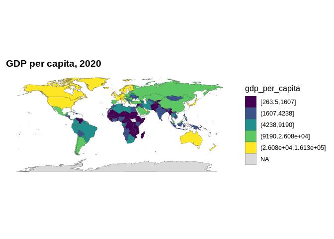
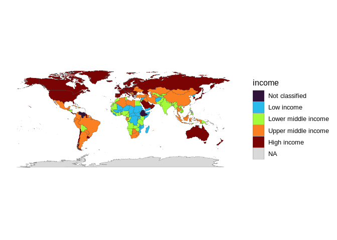
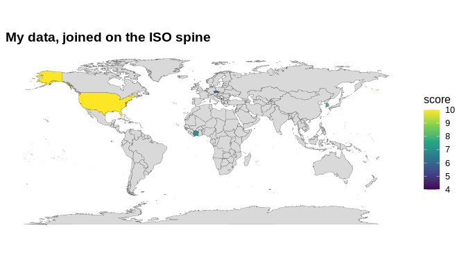
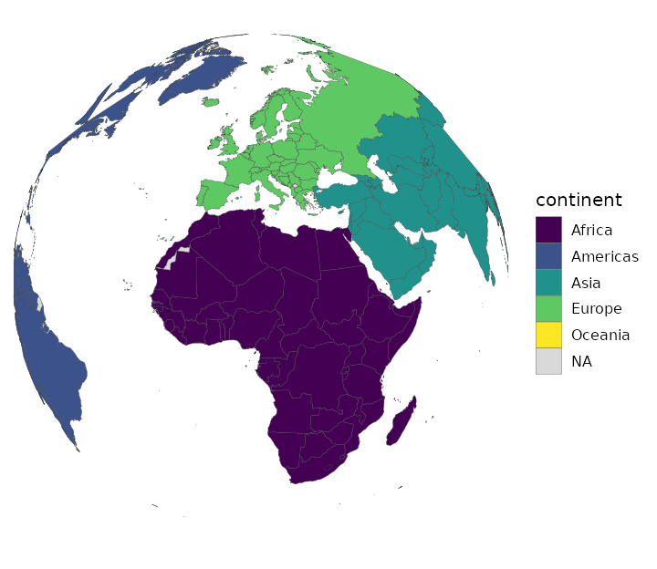
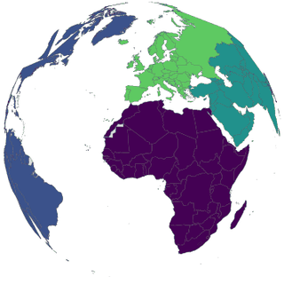
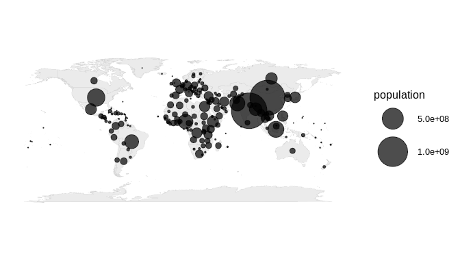

Country names never line up across data sources. "US", "U.S.", "United States", "United States of America" and "America" are the same country, but a naïve left_join() treats them as five. countryatlas kills that pain by making ISO codes the universal join key and handing you a single, ready-to-map tibble that already stitches together three otherwise disjoint worlds:
-
ggplot2::map_data("world")(or Natural Earthsf) — where countries are, - WDI — what is true about them (World Bank indicators),
- countrycode — the Rosetta stone (ISO codes, continents, regions) that makes the join possible.
The happy path is one call: world_data(2020). Everything else is opt-in.
New in 2.0.0
-
Render maps in the database with ggsql:
as_ggsql_source(),world_query(),interactive_map(engine = "ggsql"). -
More map types: an orthographic globe (
globe_map()), small multiples (facet_map()), and 8 more projections (Winkel tripel, orthographic, Gall–Peters, …). -
Point data onto the spine:
locate_country()(point-in-polygon). -
Cleaner joins:
repair_country_names()auto-fixes typos;country_join_all()reduce-joins many tables at once. -
More analysis:
growth_rate(),index_to(),share_of_world(). - More country groups: Mercosur, GCC, Nordic, Visegrád.
- Correctness fixes that change map output (quantile binning, centroids, label placement, projections, override-only lookups) — full changelog.
Installation
# install.packages("devtools")
devtools::install_github("PursuitOfDataScience/countryatlas")The base install is light. Heavy spatial extras (sf, rnaturalearth, cartogram, biscale, geofacet, gganimate, leaflet, …) live in Suggests and are only needed for the features that use them.
One call to a map-ready tibble
data_2020 <- world_data(2020)
data_2020
#> # A tibble: 99,338 × 13
#> long lat group order subregion iso3c iso2c country continent region income
#> <dbl> <dbl> <dbl> <int> <chr> <chr> <chr> <chr> <chr> <chr> <fct>
#> 1 -69.9 12.5 1 1 <NA> ABW AW Aruba Americas Latin… High …
#> 2 -69.9 12.4 1 2 <NA> ABW AW Aruba Americas Latin… High …
#> 3 -69.9 12.4 1 3 <NA> ABW AW Aruba Americas Latin… High …
#> 4 -70.0 12.5 1 4 <NA> ABW AW Aruba Americas Latin… High …
#> 5 -70.1 12.5 1 5 <NA> ABW AW Aruba Americas Latin… High …
#> 6 -70.1 12.6 1 6 <NA> ABW AW Aruba Americas Latin… High …
#> 7 -70.0 12.6 1 7 <NA> ABW AW Aruba Americas Latin… High …
#> 8 -70.0 12.6 1 8 <NA> ABW AW Aruba Americas Latin… High …
#> 9 -69.9 12.5 1 9 <NA> ABW AW Aruba Americas Latin… High …
#> 10 -69.9 12.5 1 10 <NA> ABW AW Aruba Americas Latin… High …
#> # ℹ 99,328 more rows
#> # ℹ 2 more variables: gdp_per_capita <dbl>, gdp_per_capita_2015 <dbl>world_data() returns the map geometry, the requested World Bank indicator(s), income and continent — already keyed on iso3c/iso2c. Draw a choropleth with the built-in world_map() helper (no more hand-rolled geom_polygon() boilerplate):
world_map(data_2020, gdp_per_capita, style = "quantile",
title = "GDP per capita, 2020")
world_map(data_2020, income, style = "categorical")
Any indicator, any year span
Pass one or many WDI codes with friendly names, or a year range to get a panel:
country_data(2020, c(life_exp = "SP.DYN.LE00.IN", co2 = "EN.GHG.CO2.PC.CE.AR5")) |>
head()
#> # A tibble: 6 × 8
#> iso3c iso2c country continent region income life_exp co2
#> <chr> <chr> <chr> <chr> <chr> <fct> <dbl> <dbl>
#> 1 AFG AF Afghanistan Asia Middle East, No… Low i… 61.5 0.311
#> 2 ALB AL Albania Europe Europe & Centra… Upper… 77.8 1.81
#> 3 DZA DZ Algeria Africa Middle East, No… Upper… 73.3 3.90
#> 4 ASM AS American Samoa Oceania East Asia & Pac… High … 72.7 0.00201
#> 5 AND AD Andorra Europe Europe & Centra… High … 79.4 NA
#> 6 AGO AO Angola Africa Sub-Saharan Afr… Lower… 63.1 0.614Use the bundled common_indicators catalogue so you never memorise a code:
head(common_indicators)
#> # A tibble: 6 × 3
#> name code description
#> <chr> <chr> <chr>
#> 1 population SP.POP.TOTL Population, total
#> 2 gdp NY.GDP.MKTP.CD GDP (current US$)
#> 3 gdp_constant NY.GDP.MKTP.KD GDP (constant 2015 US$)
#> 4 gdp_per_capita NY.GDP.PCAP.KD GDP per capita (constant 2015 US$)
#> 5 gdp_per_capita_current NY.GDP.PCAP.CD GDP per capita (current US$)
#> 6 gni_per_capita NY.GNP.PCAP.CD GNI per capita (current US$)Get your own data onto a map
This is the headline use case. You have a frame keyed on messy country names — join_world() standardises it and attaches geometry in one call:
my_data <- data.frame(
nation = c("U.S.", "S. Korea", "Czechia", "Kosovo", "Cote d'Ivoire"),
score = c(10, 8, 6, 4, 7)
)
my_data |>
join_world(nation, warn = FALSE) |>
world_map(score, title = "My data, joined on the ISO spine")
Or reconcile two messy tables directly — "Czech Republic" vs "Czechia", "South Korea" vs "Korea, Rep." just work:
a <- data.frame(country = c("Czechia", "South Korea"), gdp = c(1, 2))
b <- data.frame(nation = c("Czech Republic", "Korea, Rep."), pop = c(10, 51))
country_join(a, b, country, nation)
#> # A tibble: 2 × 5
#> country gdp iso3c nation pop
#> <chr> <dbl> <chr> <chr> <dbl>
#> 1 Czechia 1 CZE Czech Republic 10
#> 2 South Korea 2 KOR Korea, Rep. 51Never lose a country silently
check_country_match(c("USA", "Cote d'Ivoire", "Yugoslavia", "Wakanda"))
#> # A tibble: 4 × 4
#> input iso3c matched suggestion
#> <chr> <chr> <lgl> <chr>
#> 1 USA USA TRUE <NA>
#> 2 Cote d'Ivoire CIV TRUE <NA>
#> 3 Yugoslavia <NA> FALSE Yugoslavia
#> 4 Wakanda <NA> FALSE CanadaReference data at your fingertips
convert_country(c("Japan", "Brazil", "Germany"), to = "flag")
#> [1] "🇯🇵" "🇧🇷" "🇩🇪"
convert_country(c("Japan", "Brazil", "Germany"), to = "currency")
#> [1] "JPY" "BRL" "EUR"
in_group(c("France", "United States", "Japan"), "EU")
#> [1] TRUE FALSE FALSEA whole vocabulary of honest maps
Beyond the choropleth: proportional-symbol (bubble_map()), bivariate (bivariate_map()), area-honest cartograms (cartogram_map()), equal-area tile grids (tile_map()), great-circle flows (flow_map()), an orthographic globe (globe_map()), small multiples (facet_map()), animation (animate_world()) and interactivity (interactive_map()).
The world as a globe, not a rectangle — with the "polygon" backend (only maps + mapproj, no sf) you can draw it and even spin it:
globe_map(world_snapshot$countries, continent, backend = "polygon",
style = "categorical", lon = 10, lat = 20)
# assemble a rotating GIF (one full turn; needs gifski or magick)
spin_globe(world_snapshot$countries, continent, backend = "polygon",
style = "categorical")
bubble_map(world_snapshot$countries, population)
Render in the database with ggsql
ggsql draws plots in the database (DuckDB) and returns a Vega-Lite widget — no ggplot2 or sf runtime needed. countryatlas does the part ggsql’s static world can’t (ISO reconciliation, overrides, the WDI join); ggsql does the part countryatlas doesn’t (push-down + web-ready output). world_query() emits the spatial query (no dependencies):
world_query(gdp_per_capita, palette = "magma", transform = "log10",
title = "GDP per capita")
#> VISUALISE gdp_per_capita AS fill
#> FROM countryatlas_world
#> DRAW spatial
#> PROJECT TO equal_earth
#> SCALE fill TO magma VIA log10
#> LABEL title => 'GDP per capita'…and as_ggsql_source() / interactive_map(engine = "ggsql") register your curated table and render it in the database. See the countryatlas and ggsql vignette.
More ways in, more to compute
Get point data onto the spine, repair messy names, reduce-join many tables, and run panel analysis — all keyed on iso3c:
# each country's share of a world total (within year, for a panel)
share_of_world(data.frame(iso3c = c("USA", "CHN", "IND"), co2 = c(5, 15, 3)), co2)
#> # A tibble: 3 × 3
#> iso3c co2 co2_share
#> <chr> <dbl> <dbl>
#> 1 USA 5 0.217
#> 2 CHN 15 0.652
#> 3 IND 3 0.130
# reduce-join several messy tables on the ISO spine at once
t1 <- data.frame(country = c("Czechia", "South Korea"), gdp = c(1, 2))
t2 <- data.frame(country = c("Czech Republic", "Korea, Rep."), pop = c(10, 51))
t3 <- data.frame(country = c("Czechia", "Korea"), area = c(79, 100))
country_join_all(list(t1, t2, t3), by = "country")
#> # A tibble: 2 × 7
#> country.x gdp iso3c country.y pop country area
#> <chr> <dbl> <chr> <chr> <dbl> <chr> <dbl>
#> 1 Czechia 1 CZE Czech Republic 10 Czechia 79
#> 2 South Korea 2 KOR Korea, Rep. 51 Korea 100repair_country_names() auto-fixes typos to the closest known country, locate_country(lon, lat) tags coordinates with the country that contains them, and growth_rate() / index_to() add panel metrics.
Offline by default
The bundled world_snapshot (a curated indicator set for one recent year, plus metadata) means examples, tests and vignettes all run without the World Bank API.
Learn more
See the vignettes — Getting started, Joining your own data, Modern maps with sf & projections, Beyond the choropleth, and countryatlas and ggsql — and the reference site.